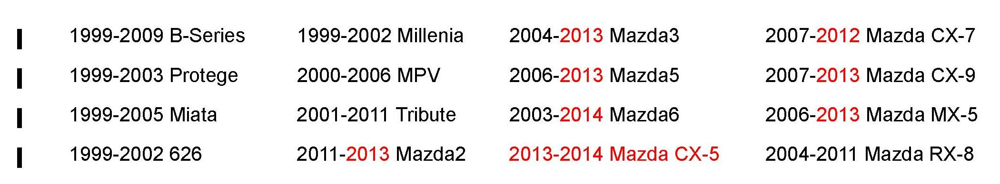
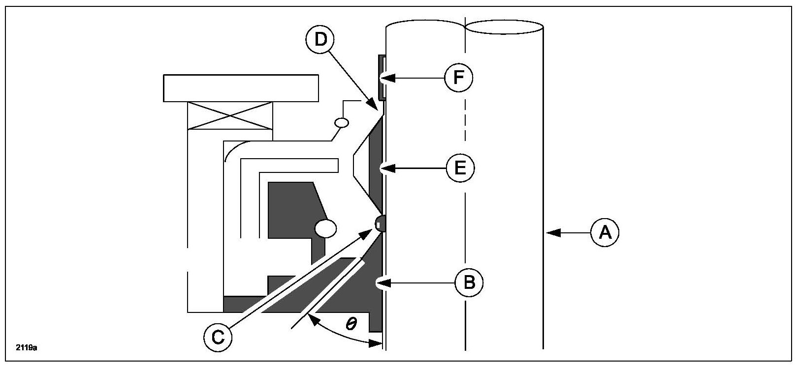
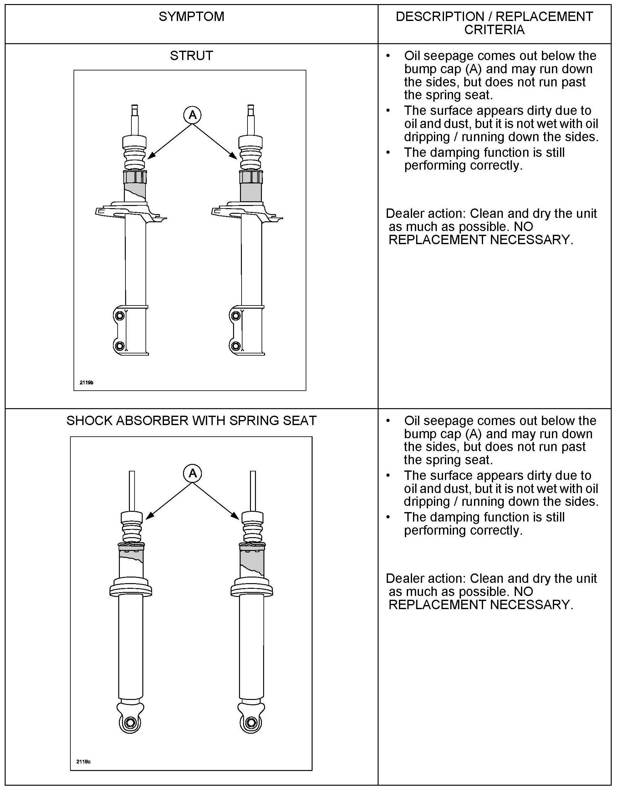
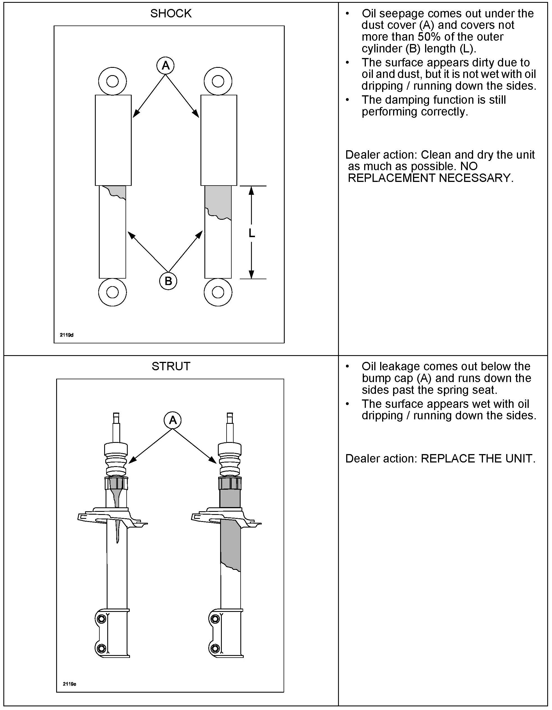
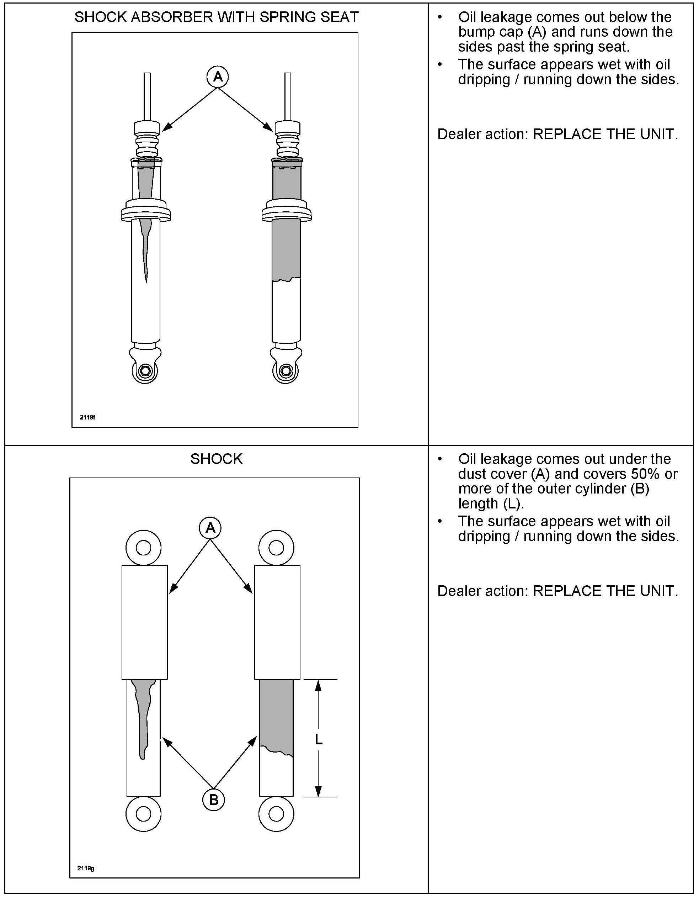

Suspension - Shock Absorber/Strut Replacement Guidelines
Bulletin No: 02-001/13Last Issued: 01/14/2013
Subject:
SHOCK ABSORBER REPLACEMENT GUIDELINES
BULLETIN NOTE
*^ This bulletin supercedes the previous bulletin 02-004/11 issued on 07/11/11, 02-005/09, issued 06/05/09, 02-004/08 issued 05/18/08, and 02-001/04 issued 01/15/04. The APPLICABLE MODELS/VINS has been revised.
^ Changes are noted by asterisks or blacks bars in the margin. *

APPLICABLE MODELS/VINS
DESCRIPTION
Some customers may complain of signs of oil on the struts or shock absorbers. In most cases the oil that is present is normal, and a result of the oil that remains on the shaft during the normal sweeping process of the shaft seal.
Follow the inspection guidelines to determine if the condition is a result of the normal sweeping process or a failure of the shaft seal.
SERVICE INFORMATION
1. Inspect the shock absorber by using the following guidelines to determine if shock absorber replacement is necessary or not.
- If it is oil seepage, the shock absorber does NOT need to be replaced.
- If it is oil leakage, the shock absorber needs to be replaced.
NOTE:
Warranty claims submitted for oil seepage shock absorbers will be denied or subject to debit.
CAUSE OF OIL SEEPAGE
Oil seepage is caused by the following factors and is not a problem:
^ A small amount of oil seeps outside through the dust lip during normal operation.
^ The oil film thickness is uneven due to production variation of rod and seal.

When the rod (A) receives input from the road and extends upward, most of the oil (B) on the rod is scraped off by the main lip (C) and some remains inside the dust lip (D). When the rod extends further, then most of the remaining oil (E) on the rod is scraped off by the dust lip, and a small amount of oil seeps out (F).
CAUSE OF OIL LEAKAGE



Oil leakage is caused by the following factors and is a problem:
^ The rod is damaged (dent, etching, rust, or foreign substance).
^ The lips are damaged.